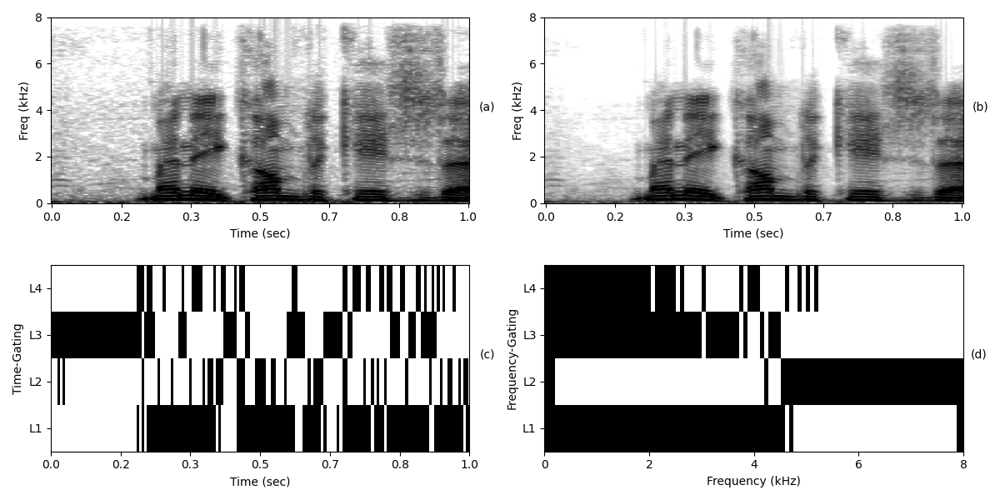
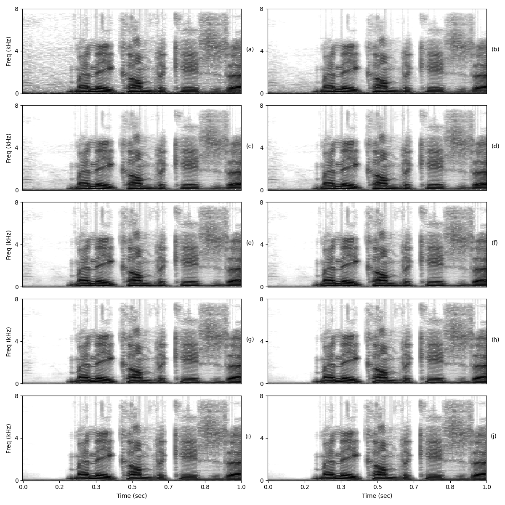
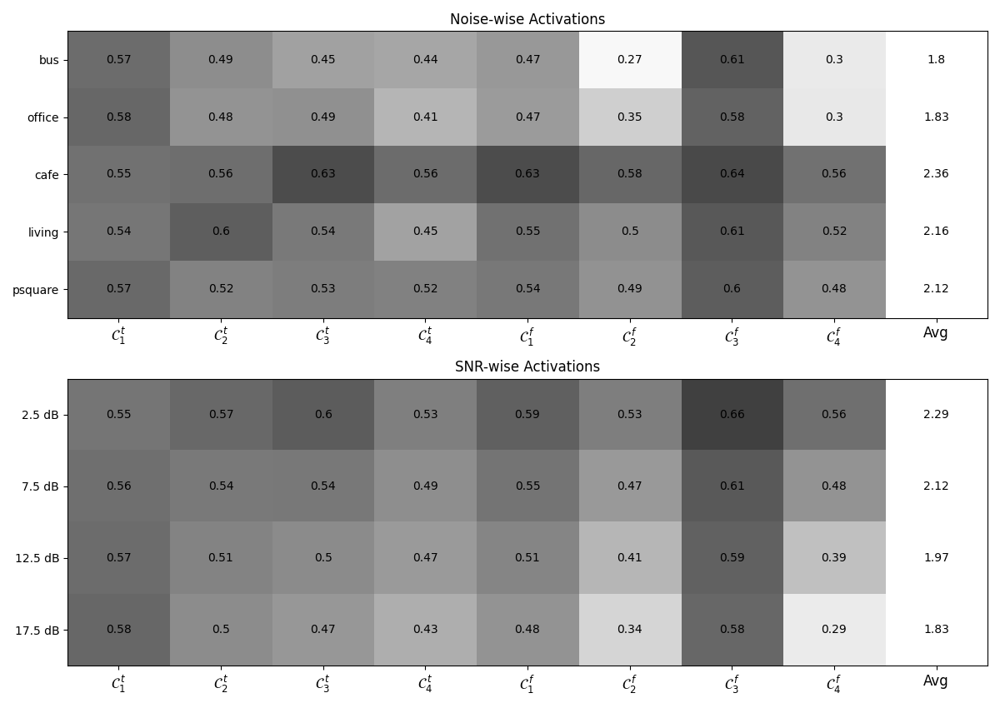

Dynamic Layer Gating for Speech Enhancement
Abstract: Conventional deep learning-based speech enhancement models perform inference with fixed network structure. However, due to the time-varying spectral characteristics of speech and noise, the noisy signal exhibits varying subband and segmental signal-to-noise ratios. Adapting the network structure to these variations may offer computational efficiency and interpretability. This work introduces two gating mechanisms, sample-level gating (SG) and time-frequency level gating (TFG), to dynamically skip layers within the two-stage conformer blocks of the conformer-based metric GAN network. Our experiments demonstrate competitive performance while reducing multiply-accumulate operations by 36% with SG and 48% with TFG. Furthermore, we provide insights into the model behavior by analyzing the gate activations and intermediate layer outputs. Our analysis shows that initial layers prioritize low-frequency speech regions, while later layers focus on nonspeech regions and higher frequencies.

Figure 2: Illustration of gate activations. (a) Noisy Spectrogram (b) Output spectrogram obtained by skipping all the conformer layers (c) Time-gating (d) Frequency-gating

Figure 3: Illustration of the output magnitude spectrograms obtained by passing the intermediate layer outputs through decoder, for the same 2.5dB noisy segment shown in Figure 2. Time-conformer outputs in left column (a,c,e,g), and frequency-conformer outputs in right column (b, d, f, h)

Figure 5: Noise and SNR-wise average execution rates of the conformer layers